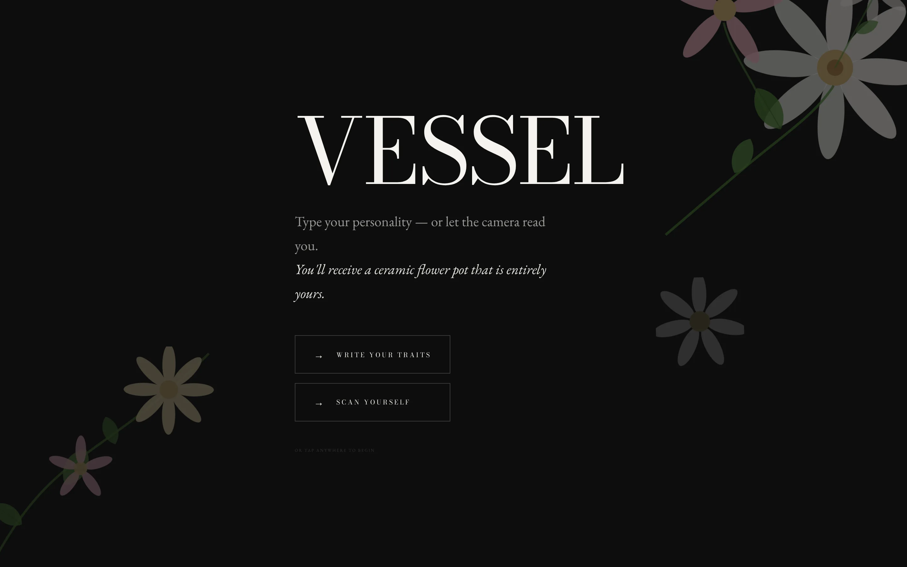
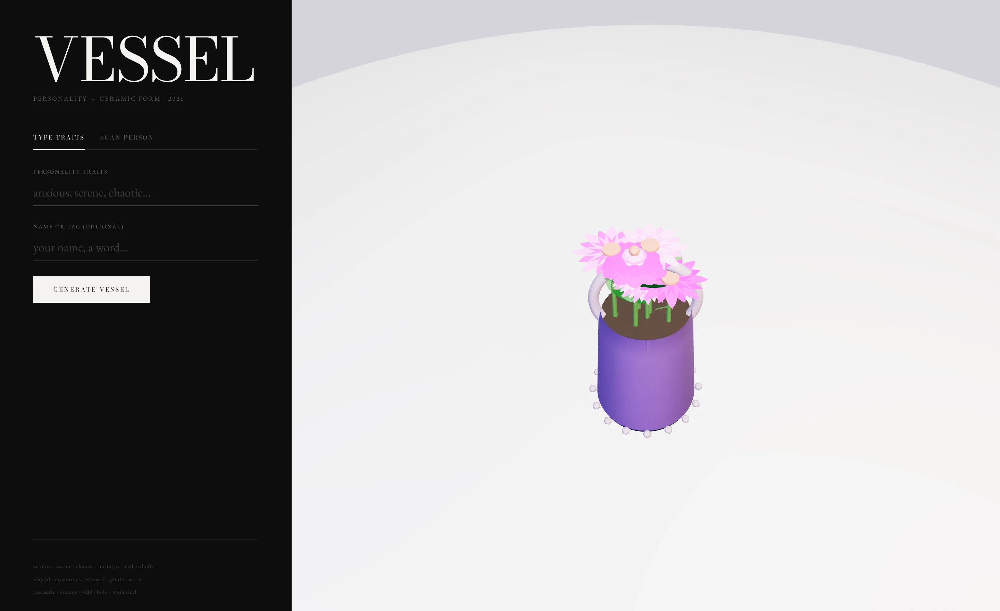
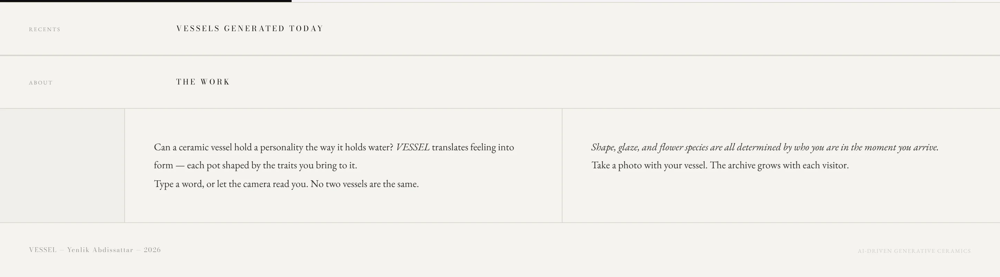

01
Arrival
Type your traits, or let the camera read you.

05
A flower pot for every visitor
Overview
An installation that reads each visitor, from the words they type or a few seconds in front of the camera, and gives them a ceramic flower pot of their own. Shape, glaze and flower all come from who they are when they arrive.
BriefIf you were a flower pot, which one would you be? Not from a quiz, but from how you stand, how you move, what you wear and the space you take up in a room.
ApproachFour Claude agents work in turn: the Observer reads the visitor, the Vessel Maker chooses the pot, the Poet writes a one-line reading and the Director drops the pot into the frame. Visitors take a photo with their vessel, and the archive grows with each one.
3 steps
Type your traits, or let the camera read you.

The reading becomes a pot you can turn and inspect.

Every visitor adds a vessel; no two are the same.
